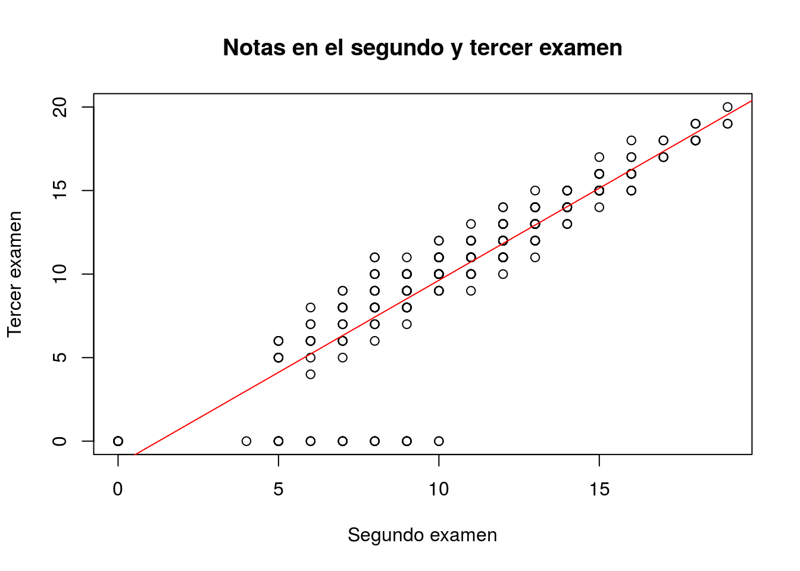

13.4 Regresión lineal
La regresión lineal (al menos en el caso más simple de una sola variable predictora) identifica la recta óptima que atraviesa una nube de puntos. En el caso que se muestra a continuación, la construida representando gráficamente la nota de los alumnos en los exámenes segundo y tercero, i.e., G2 y G3:
plot(mat.por$G2, mat.por$G3,
main = "Notas en el segundo y tercer examen",
xlab = "Segundo examen", ylab = "Tercer examen")
modelo.00 <- lm(G3 ~ G2, data = mat.por)
abline(modelo.00, col = "red")
En el código anterior hemos representado nuestros datos con una gráfica de dispersión y hemos creado un modelo lineal para encontrar la recta que mejor se ajusta a los datos. Luego la hemos representado con la función abline en rojo. Advierte cómo abline es capaz de interpretar los coeficientes del modelo para representar la recta: no es necesario indicárselos explícitamente.
En las publicaciones científicas se suele resumir un modelo lineal mediante una tabla y algunos indicadores adicionales (como la \(R^2\)). La función summary proporciona dicha información:
summary(modelo.00)##
## Call:
## lm(formula = G3 ~ G2, data = mat.por)
##
## Residuals:
## Min 1Q Median 3Q Max
## -9.6284 -0.3326 0.2695 1.0653 3.5759
##
## Coefficients:
## Estimate Std. Error t value Pr(>|t|)
## (Intercept) -1.39276 0.29694 -4.69 3.77e-06 ***
## G2 1.10211 0.02615 42.14 < 2e-16 ***
## ---
## Signif. codes: 0 '***' 0.001 '**' 0.01 '*' 0.05 '.' 0.1 ' ' 1
##
## Residual standard error: 1.953 on 393 degrees of freedom
## Multiple R-squared: 0.8188, Adjusted R-squared: 0.8183
## F-statistic: 1776 on 1 and 393 DF, p-value: < 2.2e-16Cabría esperar que la nota del segundo examen fuese muy similar a la del primero. Es decir, que la recta de regresión fuese aproximadamente y = x; dicho de otra manera, que los coeficientes del modelo fuesen 0 y 1. Sin embargo, no ocurre así: por cada punto en el primer examen, los alumnos sacan 1.1 puntos en el segundo; pero comienzan con un hándicap de -1.39 puntos. Eso es extraño y por eso se plantea el siguiente ejercicio.
Las observaciones con valor G3 == 0, fácilmente identificables en el gráfico de dispersión mostrado más arriba, parecen estar sesgando el modelo. Elimínalas y repite el análisis anterior.
El ejercicio anterior pone de manifiesto lo fundamental de un análisis visual de los datos previo a su modelización estadística. No obstante, los diagnósticos de la regresión, es decir, el estudio de sus resultados, también permite identificar a posteriori este tipo de problemas.
Estas observaciones pudieran haber afectado tambiél al t-test anterior. Repítelo después de eliminar esas observaciones.
La regresión lineal puede utilizarse con más de una única variable predictora, como a continuación:
modelo.10 <- lm(G3 ~ ., data = mat.por)
summary(modelo.10)##
## Call:
## lm(formula = G3 ~ ., data = mat.por)
##
## Residuals:
## Min 1Q Median 3Q Max
## -7.9339 -0.5532 0.2680 0.9689 4.6461
##
## Coefficients:
## Estimate Std. Error t value Pr(>|t|)
## (Intercept) -1.115488 2.116958 -0.527 0.598573
## schoolMS 0.480742 0.366512 1.312 0.190485
## sexM 0.174396 0.233588 0.747 0.455805
## age -0.173302 0.100780 -1.720 0.086380 .
## addressU 0.104455 0.270791 0.386 0.699922
## famsizeLE3 0.036512 0.226680 0.161 0.872128
## PstatusT -0.127673 0.335626 -0.380 0.703875
## Medu 0.129685 0.149999 0.865 0.387859
## Fedu -0.133940 0.128768 -1.040 0.298974
## Mjobhealth -0.146426 0.518491 -0.282 0.777796
## Mjobother 0.074088 0.332044 0.223 0.823565
## Mjobservices 0.046956 0.369587 0.127 0.898973
## Mjobteacher -0.026276 0.481632 -0.055 0.956522
## Fjobhealth 0.330948 0.666601 0.496 0.619871
## Fjobother -0.083582 0.476796 -0.175 0.860945
## Fjobservices -0.322142 0.493265 -0.653 0.514130
## Fjobteacher -0.112364 0.601448 -0.187 0.851907
## reasonhome -0.209183 0.256392 -0.816 0.415123
## reasonother 0.307554 0.380214 0.809 0.419120
## reasonreputation 0.129106 0.267254 0.483 0.629335
## guardianmother 0.195741 0.252672 0.775 0.439046
## guardianother 0.006565 0.463650 0.014 0.988710
## traveltime 0.096994 0.157800 0.615 0.539170
## studytime -0.104754 0.134814 -0.777 0.437667
## failures -0.160539 0.161006 -0.997 0.319399
## schoolsupyes 0.456448 0.319538 1.428 0.154043
## famsupyes 0.176870 0.224204 0.789 0.430710
## paidyes 0.075764 0.222100 0.341 0.733211
## activitiesyes -0.346047 0.205938 -1.680 0.093774 .
## nurseryyes -0.222716 0.254184 -0.876 0.381518
## higheryes 0.225921 0.500398 0.451 0.651919
## internetyes -0.144462 0.287528 -0.502 0.615679
## romanticyes -0.272008 0.219732 -1.238 0.216572
## famrel 0.356876 0.114124 3.127 0.001912 **
## freetime 0.047002 0.110209 0.426 0.670021
## goout 0.012007 0.105230 0.114 0.909224
## Dalc -0.185019 0.153124 -1.208 0.227741
## Walc 0.176772 0.114943 1.538 0.124966
## health 0.062995 0.074800 0.842 0.400259
## absences 0.045879 0.013412 3.421 0.000698 ***
## G1 0.188847 0.062373 3.028 0.002645 **
## G2 0.957330 0.053460 17.907 < 2e-16 ***
## ---
## Signif. codes: 0 '***' 0.001 '**' 0.01 '*' 0.05 '.' 0.1 ' ' 1
##
## Residual standard error: 1.901 on 353 degrees of freedom
## Multiple R-squared: 0.8458, Adjusted R-squared: 0.8279
## F-statistic: 47.21 on 41 and 353 DF, p-value: < 2.2e-16En este modelo hemos incluido todas las variables predictoras. La tabla obtenida muestra cómo dos de la más importantes para predecir la nota final son G1 y G2. Lo cual tiene mucho sentido. Pero, a la vez, bajo cierto punto de vista, es poco instructivo. Nos gustaría más saber cómo afectan las variables sociodemográficas a la nota obtenida en un examen (y no constatar que quienes sacan buenas notas tienden a seguir sacándolas). Por eso podemos repetir el ejercicio eliminando dichas variables.
modelo.11 <- lm(G3 ~ . - G1 - G2, data = mat.por)
summary(modelo.11)##
## Call:
## lm(formula = G3 ~ . - G1 - G2, data = mat.por)
##
## Residuals:
## Min 1Q Median 3Q Max
## -13.0442 -1.9028 0.4289 2.7570 8.8874
##
## Coefficients:
## Estimate Std. Error t value Pr(>|t|)
## (Intercept) 14.07769 4.48089 3.142 0.00182 **
## schoolMS 0.72555 0.79157 0.917 0.35997
## sexM 1.26236 0.50003 2.525 0.01202 *
## age -0.37516 0.21721 -1.727 0.08501 .
## addressU 0.55135 0.58412 0.944 0.34586
## famsizeLE3 0.70281 0.48824 1.439 0.15090
## PstatusT -0.32010 0.72390 -0.442 0.65862
## Medu 0.45687 0.32317 1.414 0.15833
## Fedu -0.10458 0.27762 -0.377 0.70663
## Mjobhealth 0.99808 1.11819 0.893 0.37268
## Mjobother -0.35900 0.71316 -0.503 0.61500
## Mjobservices 0.65832 0.79784 0.825 0.40985
## Mjobteacher -1.24149 1.03821 -1.196 0.23257
## Fjobhealth 0.34767 1.43796 0.242 0.80909
## Fjobother -0.61967 1.02304 -0.606 0.54509
## Fjobservices -0.46577 1.05697 -0.441 0.65972
## Fjobteacher 1.32619 1.29654 1.023 0.30707
## reasonhome 0.07851 0.55380 0.142 0.88735
## reasonother 0.77707 0.81757 0.950 0.34252
## reasonreputation 0.61304 0.57657 1.063 0.28839
## guardianmother 0.06978 0.54560 0.128 0.89830
## guardianother 0.75010 0.99946 0.751 0.45345
## traveltime -0.24027 0.33897 -0.709 0.47889
## studytime 0.54952 0.28765 1.910 0.05690 .
## failures -1.72398 0.33291 -5.179 3.75e-07 ***
## schoolsupyes -1.35058 0.66693 -2.025 0.04361 *
## famsupyes -0.86182 0.47869 -1.800 0.07265 .
## paidyes 0.33975 0.47775 0.711 0.47746
## activitiesyes -0.32953 0.44494 -0.741 0.45942
## nurseryyes -0.17730 0.54931 -0.323 0.74706
## higheryes 1.37045 1.07780 1.272 0.20437
## internetyes 0.49813 0.61956 0.804 0.42192
## romanticyes -1.09449 0.46925 -2.332 0.02024 *
## famrel 0.23155 0.24593 0.942 0.34706
## freetime 0.30242 0.23735 1.274 0.20345
## goout -0.59367 0.22451 -2.644 0.00855 **
## Dalc -0.27223 0.33087 -0.823 0.41120
## Walc 0.26339 0.24801 1.062 0.28896
## health -0.17678 0.16101 -1.098 0.27297
## absences 0.05629 0.02897 1.943 0.05277 .
## ---
## Signif. codes: 0 '***' 0.001 '**' 0.01 '*' 0.05 '.' 0.1 ' ' 1
##
## Residual standard error: 4.108 on 355 degrees of freedom
## Multiple R-squared: 0.2756, Adjusted R-squared: 0.196
## F-statistic: 3.463 on 39 and 355 DF, p-value: 3.317e-10Examina los R2 de ambos modelos: ¿cómo han cambiado? ¿Por qué? Nota: el indicador R2 es una medida de la bondad del ajuste, i.e., de la diferencia entre los datos y sus predicciones. Tiene el valor 1 si el ajuste es perfecto y 0 cuando el modelo no dice absolutamente nada acerca de la variable de interés.
La tabla de coeficientes mostrada más arriba se utiliza para interpretar el modelo: ver qué variables son las más importantes, en qué medida influyen en la variable de interés, etc. Sin embargo, es evidente que la interpretación es complicada cuando el número de coeficientes crece. Modelos como los presentados más arriba, los árboles, son más fáciles de interpretar. De ahí el siguiente ejercicio.
Usa árboles para tratar de entender mejor el conjunto de datos y las variables que afectan a las notas finales. ¿Ves alguna variable que pueda ayudar a explicar la diferencia de desempeño entre chicos y chicas?